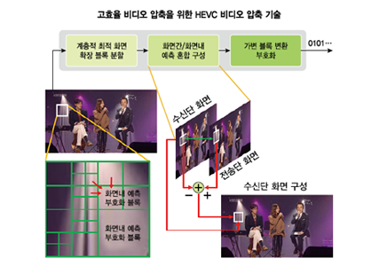

주제별 연구성과
주제별 연구성과
KAIST RESEARCH ACHIEVEMENTS
고화질로 동영상을 압축하는 기술
전기및전자공학부 김문철
요약
네트워크 및 통신 기술의 발전과 더불어 현재 인터넷을 통해 오고가는 트래픽 데이터의 70% 이상이 비디오 데이터일 정도로, 비디오 콘텐츠는 멀티미디어 시대에 중요한 미디어로서의 위치를 점하고 있다. 고속 네트워크와 디스플레이 기술 발전, 그리고 고도화된 방송 서비스의 등장으로 인해, 향후에 비디오 콘텐츠는 초고품질 실감미디어로 발전할 것으로 예상된다. 이로 인해 비디오 데이터는 기하급수적으로 증가할 것이다. 가까운 미래에는 이러한 초해상도 비디오 콘텐츠를 언제 어디서나 다양한 멀티미디어 기기들을 통해 자유롭게 소비가 가능한 시대에 살게 될 것이다. 따라서, 대용량의 초고품질 비디오 데이터를 효율적으로 압축할 수 있는 기술의 요구사항이 꾸준히 제기되고 있다.
연구내용
UHD(Ultra High Definition)급 비디오 콘텐츠의 빠른 증가로 인해, UHDTV/방송과 UHD 비디오 스트리밍과 같은 비디오 서비스는 UHD 비디오 콘텐츠의 효율 적인 저장과 전송을 가능하게 하는 보다 진보된 비디오 압축 부호화 기술에 대한 요구사항이 꾸준히 제기되어 왔다. 기존 비디오 압축 부호화 기술들은 비디오 데이터를 16×16 화소 크기인 매크로블록(macroblock-MB) 단위로 압축하는 방식을 취해왔다. 그러나 이러한 방법은 압축 효율에 많은 제약이 되었으며, UHD급 비디오와 같이 공간 해상도가 큰 영상압축에는 적합하지 않았다. 따라서, UHD급 비디오와 같은 초고해상도 비디오 데이터를 효율적으로 압축 부호화할 수 있는 기술에 대한 꾸준한 요구사항이있어 왔다. 이러한 요구사항에 부합하기 위해, 본 연구팀은 기존의 MB 단위 부호화 구조를 확장하여, 보다유연하고, 다양한 영상 신호의 특성에 효과적으로 적응하여 압축 부호화 성능을 발휘 할 수 있는 새로운 확장 단위 부호화 블록을 고안하였다.
이 새로운 확장 단위 부호화 블록 구조는 가변 특성을 갖는 영상 신호를 작은 하위 단위 부호화 블록으로 유연하게 분할하여 부호화 할 수 있는 특징을 가질 수 있으며, 분할된 하위 단위 부호화 블록들이 화면간 부호화 및 화면내 부호화 방식으로 혼재되어 부호화 될 수 있도록하여 부호화 성능을 향상 시키고자 하였다. 뿐만 아니라 단위 부호화블록들 내의 잔차 신호들을 가변 변환 블록들을 사용하여 효과적으로 압축 부호화 할 수 있도록 하게 하였다.


비디오는 데이터 양이 방대하기 때문에 효율적인 저장 및 전송을 위해 데이터 압축이 필수적이다. 더욱이 디지털 기기간 호환성을 위해 압축방식에 대한 표준이 필요한데, 지금 디지털 방송에 사용되는 비디오 압축 표준인 MPEG-2와 DMB/IPTV 등에 사용되는 표준인 H.264/AVC(Advanced Video Coding)가 대표적이다. 지금까지의 비디오 데이터 압축 기술은 입력 비디오의 각 화면 전체를 한 번에 압축하는 것이 아니라 16×16 화소단위로 나누어 압축 부호화를 하는 기법을 적용해 왔다. 본 연구에서는 이러한 고정된 화면 단위 블록의 크기를 크게 확장하였고, 입력 영상 신호의 특성에 따라 압축 효율이 최대화 되도록 적응적 블록 분할 구조로 설계하여 압축율을 크게 향상 시켰다. 기존에는 하나의 단위 부호화 블록내에서 화면간 또는 화면내 예측 부호화를 통해 압축 하는 방식이었으나, 본 연구의 확장된 단위 부호화 블록내에서는 화면간 및 화면내 부호화가 혼재되어 부호화할 수 있도록하여 압축 효율을 크게 개선하였고, 확장 단위 부호화 블록의 하위 단위 부호화 블록 내에서는 가변 변환 블록을 적용하여 압축율이 극대화 될 수 있도록 하였다. 이러한 방식은 ITU-T와 ISO/IEC 국제표준화 기구가 최근 공동으로 제정한 UHD 방송 및 고화질 비디오 압축에 사용될 차세대 비디오 압축 표준인 HEVC(High Efficiency Video Coding)의 근간이 되었고, 본 연구를 통해 확보한 특허가 차세대 비디오 압축 표준인 HEVC(High Efficiency Video Coding) 표준 특허로 등록됨으로써, 향후 KAIST는 전 세계 시장에서 HEVC 표준기술 사용에 따른 큰 기술료 수입을 창출할 수 있는 기회를 얻게 되었다.
UHD(초고화질)TV/방송, 케이블 TV(2014년 5월 본방송 실시)의 비디오 압축 표준에 채택 고화질 스마트폰(iPhone6/iPhone6+에 HEVC 압축 기술 탑재되어 출시), 디지털 카메라/캠코더, 영상블랙박스/감시카메라, DVD Player, 고화질 비디오 인터넷 스트리밍 서비스 HEVC의 뛰어난 압축 성능으로 인해 비디오 관련 대부분의 멀티미디어 제품에 적용될 것으로 예상되어 관련 시장이 크게 확대될 것으로 예상되기에 이로 인해, KAIST의 기술료 수입이 크게 증가할 것으로 기대됨
연구실적
ㆍ차세대 비디오 압축 부호화 요소 기술 연구 및 핵심 지적 재산권 확보
ㆍHEVC 국제 특허 확보(특허권자로서 KAIST는 HEVC 특허풀에 창립멥버로 가입)
ㆍHEVC 국제 표준 특허 확보 추진 중 ·언론 보도 15건(KBS930 뉴스광장, KBS9시 대전방송 보도 등)
참고자료
ㆍHEVC Licensors:
http://www.mpegla.com/main/programs/HEVC/Pages/Licensors.aspx
ㆍHEVC Patent list:
http://www.mpegla.com/main/programs/hevc/Documents/hevc-att1.pdf